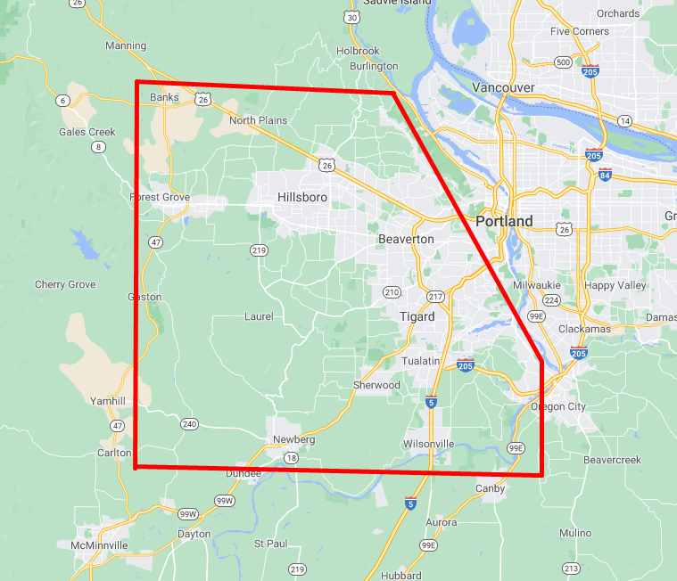

About
Tormar was founded in 2015 by Tory Gillett, who boasts over 30 years of experience in concrete. Tormar operates in the SW Portland Metropolitan area, including but not limited to: Beaverton, Tigard, Forest Grove, Hillsboro, and SW Portland.
Tormar Concrete generally services the area within the red lines, but can make excpetions depending on the size and complexity of the job. Give a call or send an email using the Contact page!
